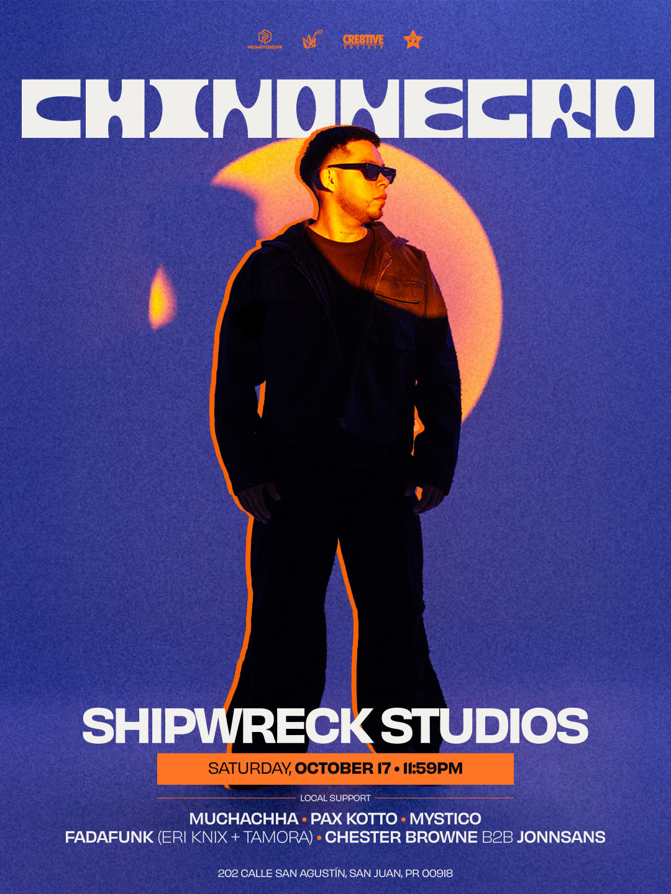

PRÓXIMO EVENTO01
17
OCTUBRE
SÁBADO · 2026
SÁBADO · 2026
CHINONEGRO
Shipwreck Studios · San Juan, PR
LOCAL SUPPORT
Muchachha · Pax Kotto · Mystico
Fadafunk (Eri Knix + Tamora)
Chester Browne b2b Jonnsans
Horario en Posh11:45 PM – 8:00 AM · AST
El flyer indica 11:59 PM. Confirma el horario en Posh antes de asistir.
Ver boletos en PoshFecha, ubicación y boletos: publicación del organizador.